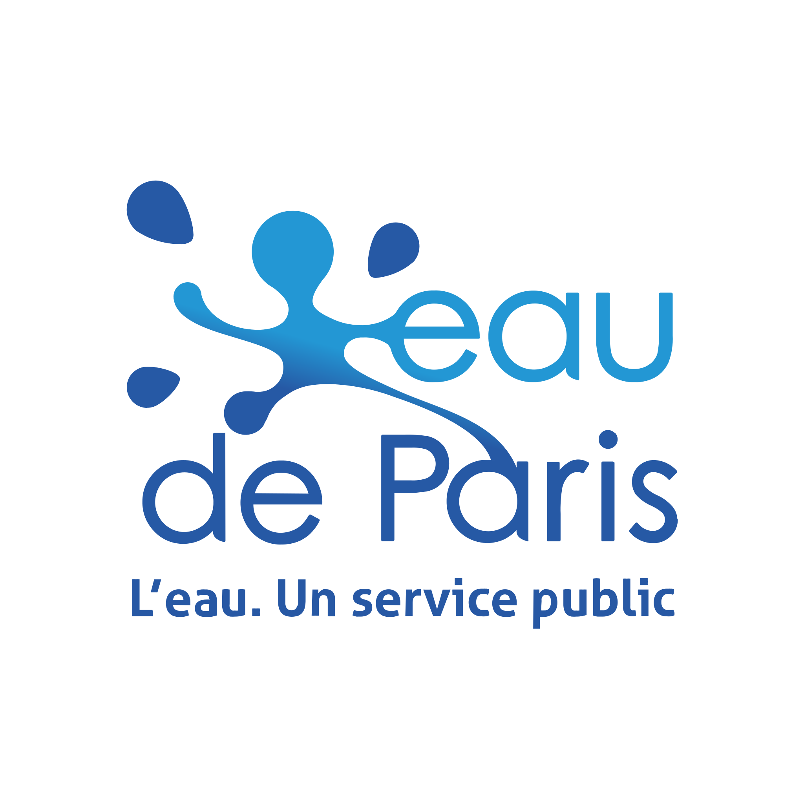

Mon Entreprise

Eau de Paris — Regie municipale de l'eau
Entreprise publique de production et distribution d'eau potable pour Paris et ses 3 millions d'usagers. Environ 1 200 collaborateurs repartis sur plusieurs sites (siege rue Neuve-Tolbiac, usines de traitement, stations de captage).
Direction des Systemes d'Information
Le Service Infrastructures et Operations (SIO) concoit, deploie et maintient les infrastructures informatiques. Il se structure en deux poles :
Pole Operations et Securite : architecture technique, evolution des infrastructures (serveurs, virtualisation, stockage, reseau), cybersecurite (pare-feux, GPO, antivirus, PRA).
Pole Support et Environnement Utilisateurs : point d'entree unique (SPOC) — attribution materiel/logiciels, traitement des incidents et demandes via GLPI, accompagnement au changement.
Mon role
Integre au Pole Support et Environnement Utilisateurs, avec interventions regulieres cote Pole Operations et Securite :
Support : N1/N2 via GLPI, accompagnement utilisateurs
Administration : Active Directory, serveurs Windows/Linux
Deploiement : parc via Ivanti (PXE)
Reseau : VLANs, VPN, configuration Cisco
Supervision : exploitation Zabbix, documentation technique
Contexte technique
Parc : ~800 postes (Win 10/11), ~50 nomades
Serveurs : ~60 physiques/virtuels (WS 2019/2022, Debian)
Virtualisation : VMware vSphere 7.x, SAN NetApp
Reseau : Cisco Catalyst/ISR, VLANs, VPN IPsec, Meraki
AD : Foret mono-domaine, ~1 200 comptes, GPO
Supervision : Zabbix 6.x
Deploiement : Ivanti Management Suite
ITSM : GLPI 10.x
Sauvegarde : Veeam B&R, politique 3-2-1, PRA
Securite : FortiGate, Trend Micro, MFA
_page-0001 (1).jpg)
Organigramme de la Direction des Systemes d'Information — Eau de Paris